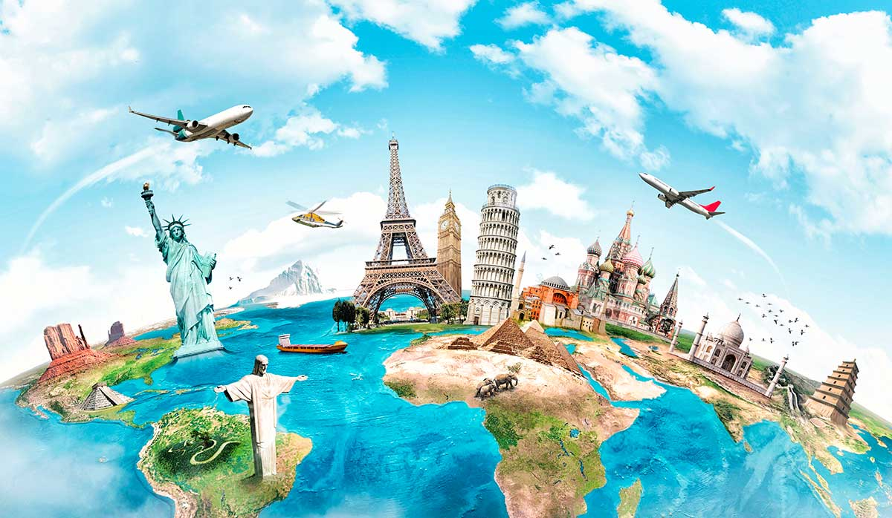
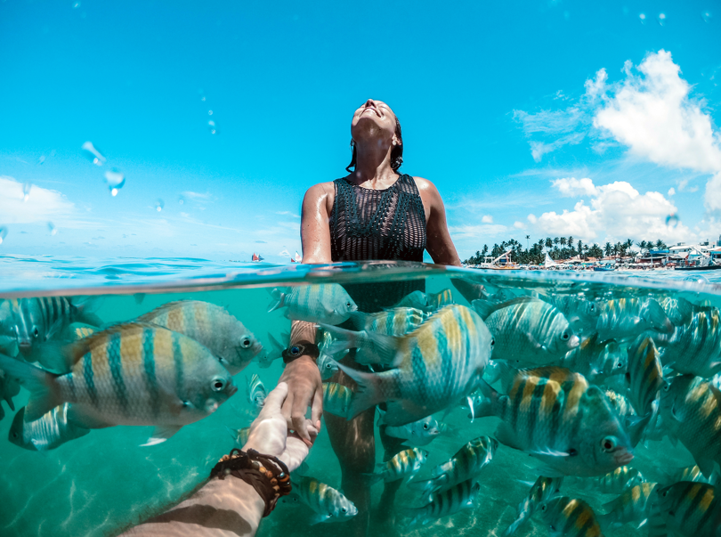
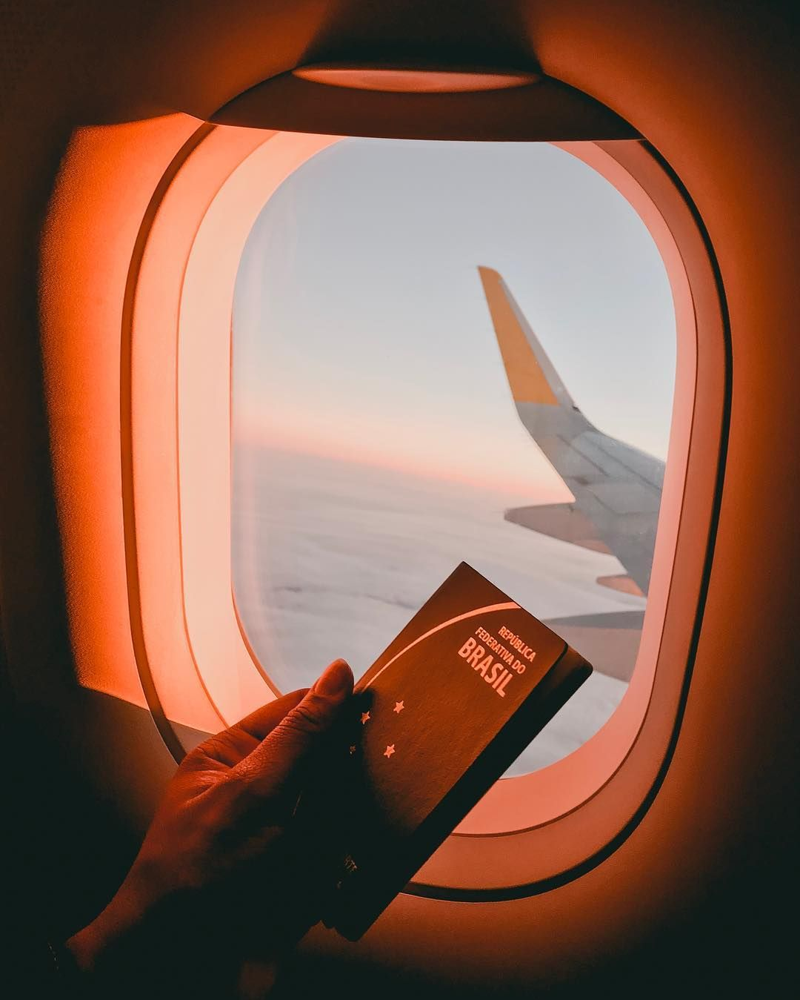

viajar é muito mais do que conhecer novos lugares, é viver experiências, descobrirculturas e criar memórias inesquecíveis. Em nosso site, você encontra dicas de viagem para tornar cada aventura mais prática,econômica e especial. Compartilhamos roteiros, sugestões de destinos, dicas de hospedagem, alimentação, transporte tudo o que pode ajudar você a planejar a viagem perfeita, seja para relaxar, explorar ou se aventurar pelo mundo.
Conheça os lugares mais visitados do mundo e descubra o que torna cada destino especial. Cidades como Paris, Roma, Rio de Janeiro e Tóquio oferecem experiências únicas, desde monumentos históricos.
Um bom planejamento é essencial para evitar problemas e aproveitar melhor a viagem. Antes de viajar é fundamental perquisar sobre o destino, verificar a documentação necessária, definir um orçamento e organizar um roteiro com os lugares que deseja visitar. Um bom planejamento ajuda a evitar gastos inesperados, otimiza o tempo disponível e proporciona mais segurança durante toda a experiência.

A hospedagem é um dos fatores que mais influenciam o conforto e a qualidade da viagem. Existem diversas opções disponíveis, como hotéis, pousadas, hostels, resorts e apartamentos por temporada, cada uma atendendo a diferentes necessidades e orçamentos. Ao escolher uma hospedagem, é importante considerar aspectos como localização, segurança, limpeza, serviços oferecidos e avaliações de outros hóspedes. Uma boa hospedagem pode tornar a viagem mais agradável, oferecendo descanso adequado após um dia de passeios e atividades.
A gastronomia é uma parte essencial da experiência de viagem, pois permite conhecer a cultura e as tradições de cada lugar através dos sabores. Experimentar pratos típicos, bebidas regionais e ingredientes locais é uma forma de mergulhar na identidade do destino visitado. Além de restaurantes famosos, mercados, feiras e pequenos estabelecimentos podem proporcionar experiências gastronômicas autênticas e memoráveis. Cada refeição pode se transformar em uma oportunidade de descobrir novos costumes e histórias.
Economizar durante uma viagem não significa deixar de aproveitar os melhores momentos. Com planejamento e algumas estratégias simples, é possível reduzir custos sem comprometer a experiência. Comprar passagens com antecedência, comparar preços de hospedagem, utilizar transporte público e pesquisar atrações gratuitas são algumas maneiras de gastar menos. Além disso, evitar compras impulsivas e estabelecer um orçamento diário ajudam a manter as finanças sob controle durante toda a viagem.
Registrar momentos especiais faz parte da experiência de viajar. Muitos destinos oferecem paisagens impressionantes, construções históricas e cenários naturais que rendem fotografias incríveis. Além de guardar lembranças, as fotos permitem compartilhar experiências com amigos e familiares. Conhecer os melhores pontos para fotografar, os horários com iluminação mais favorável e os ângulos mais interessantes pode fazer toda a diferença na qualidade dos registros.

O transporte é um elemento fundamental para explorar qualquer destino com praticidade e eficiência. Dependendo da região, os viajantes podem utilizar ônibus, metrôs, trens, aplicativos de transporte, táxis ou veículos alugados. Conhecer as opções disponíveis ajuda a economizar tempo e dinheiro, além de facilitar o deslocamento entre atrações turísticas. Planejar previamente como será a locomoção contribui para uma viagem mais organizada e confortável.
Viajar com segurança é essencial para aproveitar cada momento com tranquilidade. Algumas medidas simples, como guardar documentos em locais seguros, evitar exibir objetos de valor e conhecer os contatos de emergência do destino, podem prevenir problemas. Também é importante respeitar as orientações locais e manter-se informado sobre as condições da região visitada. Estar preparado para lidar com imprevistos aumenta a confiança e permite desfrutar da viagem de forma mais tranquila.
As viagens em família proporcionam momentos de união, diversão e aprendizado para pessoas de todas as idades. Para que a experiência seja agradável para todos, é importante escolher destinos com atrações adequadas para crianças, adolescentes e adultos. Planejar atividades variadas, garantir conforto durante os deslocamentos e reservar momentos de descanso contribuem para uma viagem mais harmoniosa. Além de criar memórias especiais, viajar em família fortalece os laços entre seus integrantes.
Para os amantes da natureza e da aventura, existem inúmeros destinos que oferecem experiências emocionantes ao ar livre. Trilhas, cachoeiras, montanhas, parques nacionais e atividades como rafting, mergulho e escalada permitem um contato mais próximo com o meio ambiente. Além da diversão, essas experiências incentivam a valorização da natureza e a prática de hábitos sustentáveis. Explorar ambientes naturais é uma excelente forma de descobrir paisagens deslumbrantes e viver momentos únicos.

O blog de viagens é um espaço dedicado ao compartilhamento de informações, experiências e inspirações para viajantes. Nele, os leitores podem encontrar relatos de aventuras, dicas práticas, curiosidades sobre destinos e recomendações para diferentes tipos de viagem. O conteúdo é atualizado regularmente para acompanhar as novidades do turismo e ajudar os visitantes a planejar suas próximas jornadas com mais confiança e conhecimento.
Somos apaixonados por explorar o mundo e acreditamos que cada viagem é uma oportunidade de aprendizado e crescimento pessoal. Nosso objetivo é oferecer informações confiáveis, dicas úteis e conteúdos inspiradores para ajudar viajantes a planejarem experiências inesquecíveis. Trabalhamos para reunir orientações práticas, sugestões de destinos e recomendações que tornem cada aventura mais segura, organizada e especial, independentemente do destino escolhido.